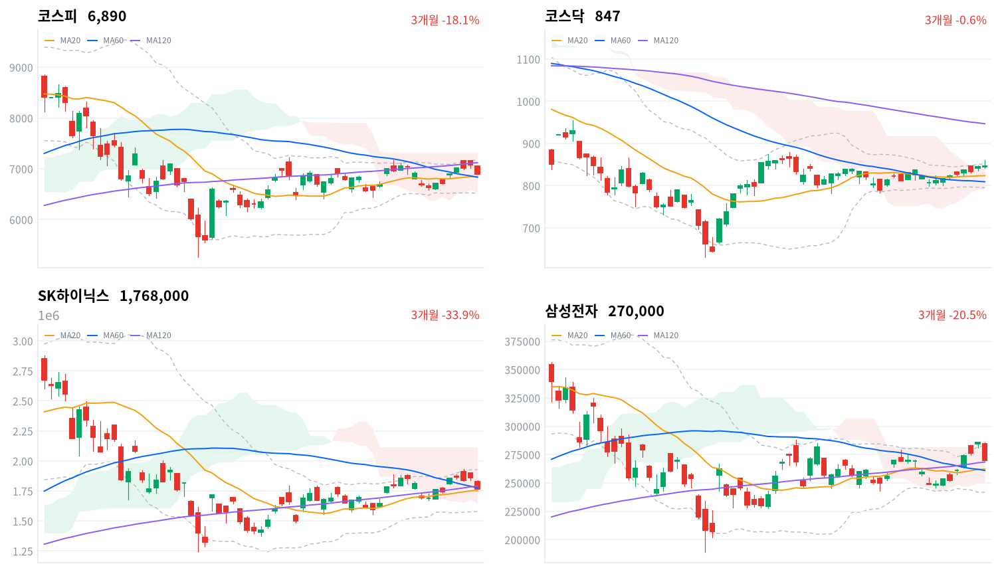

추석 연휴 뒤 첫 세션에 코스피는 하루 저가에서 마감했고, 외국인은 코스피에서 3조원 넘게 순매도했다(당일 잠정). 그래도 코스닥은 올랐고 WICS 12개 섹터 가운데 7개가 상승해, 매도는 반도체에 몰렸다.
우리는 이 하락을 휴장 동안 쌓인 미국 장기금리 상승을 한꺼번에 반영한 할인율 충격으로 판단한다. 코스피 노출은 유지하되 반도체 되돌림은 금리가 멈춘 것을 확인한 뒤로 미룬다.
코스피는 연휴 뒤 첫 세션에 191포인트 내린 6,890으로 마감했고, 종가가 곧 하루 저가였다. 하락은 삼성전자·SK하이닉스를 비롯한 반도체 대형주의 급락에서 나왔다. 반면 코스닥은 0.25% 올랐고 WICS 섹터 가운데 7개가 상승했다. 휴장 이틀 동안 오른 미국 장기금리를 국고채와 주식이 하루에 몰아서 반영한 날이다.
채권시장은 오늘 금리 충격을 크게 값으로 매겼지만 신용 위험으로 번지게 두지는 않았다. 국고채 3년물은 기준금리보다 111.9bp 높아졌고, 최근 2년(532거래일) 가운데 이보다 넓었던 날이 39일뿐이다. 반면 회사채 AA- 3년물과 국고채 3년물의 금리차는 66.9bp로 오히려 1.4bp 좁혀졌다. 주식시장은 외국인 매도로 반도체를 크게 끌어내렸지만, 채권시장은 이 날을 금리 수준의 재조정으로 읽었다. 우리도 채권시장의 읽기를 따라, 오늘을 전면적 위험회피가 아닌 할인율 충격으로 본다.
이 해석의 근거는 하락이 몰린 자리다. 최근 한 달 가장 많이 오른 반도체(+9.28%)가 가장 크게 내렸고, 2차전지(+3.32%)·자동차(+2.01%)·은행(+1.92%)은 올랐다. 솔리다임 미국 상장 추진은 SK하이닉스·SK스퀘어의 추가 낙폭을 설명하지만, 같은 크기로 내린 삼성전자는 설명하지 못한다. 오라클 데이터센터 지연 보도와 연휴 뒤 차익실현이 겹친 반도체 고유의 하락이었을 수도 있으나, 우리는 금리가 먼저라고 판단한다. 두 설명은 10월 2일까지 네 세션 가운데 미국 10년물이 9월 25일 수준(5.181%) 아래로 내려오고 국고채 10년물도 내린 날에 갈린다. 그날 반도체가 코스피를 웃돌고 외국인 순매도가 1조원 미만으로 줄면 금리 해석이 맞다.
코스피 노출은 다음 세션까지 유지하고, 반도체 되돌림은 아직 담지 않는다. 오늘 낙폭 자체에는 큰 무게를 두지 않는다. 휴장 이틀 치 금리를 하루에 반영한 날이어서, 방향은 금리가 멈추는지에 달렸다. 오늘은 새 상품을 대지 않는다. 기다리는 것은 9월 29일부터 10월 2일까지 미국 10년물과 국고채 10년물이 함께 내리는 날의 반도체 반응이고, 10월 1일 발표가 관행인 9월 수출입동향에서 반도체 수출이 금리 부담을 상쇄할 만큼 강한지도 본다.
코스피가 60일 이동평균(6,832) 아래에서 마감하면 이 판단을 다시 본다. 오늘 종가보다 약 0.8% 낮은 자리로, 바로 위 20일선과 함께 지수의 첫 지지 구간이다. 이 선을 내주면 매도가 반도체 밖으로 번졌다는 뜻이고, 금리 이월에 한정된 충격이라는 전제가 흔들린다.
9월 23일 판단은 유효하다. 그날 정한 무효화 선인 코스피 6,881은 오늘 종가로 지켜졌다. 다만 여유는 9포인트뿐이었고, 판단의 전제는 빗나갔다. 우리는 반도체가 지수를 떠받친다고 봤는데 오늘 지수를 끌어내린 것이 바로 반도체였다. 휴장 중 기다린 미·중 정상회담은 상호 관세 인하와 휴전 연장으로 정리됐지만, 오늘 가격을 움직인 것은 그사이 오른 미국 장기금리였다. 촉매를 정상회담으로 좁혀 보고 금리 경로를 놓친 것이 우리의 실수다. 기다린 외국인 순매수 복귀도 오지 않았다. 노출 등급은 유지하되, 근거를 반도체 주도에서 반도체 밖의 상승 폭으로 바꾼다.
9월 25일(현지) 미국 3대 지수는 모두 올랐다(다우 +0.93%, S&P500 +0.51%, 나스닥 +0.48%). 미국 주식이 금리 상승을 견딘 것과 달리 오늘 아시아는 약했다. 닛케이(-0.73%)와 상해종합(-1.67%)이 내렸고 항셍은 0.54% 올랐으며, 대만가권은 9월 24일 값(-0.28%)이 가장 최근이다. 네 지수 평균은 0.53% 하락이었고, 코스피는 이보다 2.17%포인트 더 내렸다.
코스피는 전 거래일 종가 7,081보다 23포인트 낮은 7,058에서 출발해, 개장 갭 자체는 작았다. 한국 정규장 동안 미국 선물은 나스닥100 선물(NQ)이 0.73%, S&P500 선물(ES)이 0.14% 내려 기술주 쪽이 더 약했다.
장중 고가 7,066에서 코스피는 176포인트 밀려 하루 저가와 사실상 같은 자리에서 끝났다. 코스닥은 장중 고점에서 밀렸지만 상승은 지켰다. 원/달러 환율은 낮 12시반 1,354원이 저점이었고, 오후 3시 1,365원까지 오른 뒤 1,363원으로 마감했다. 코스피가 오후 들어 다시 밀리는 동안 환율도 함께 올라, 주식 매도와 원화 약세가 같은 시간대에 겹쳤다.
오늘은 휴장 이틀 치 미국 장기금리가 반도체 대형주로 옮겨붙은 날이다. 세계일보는 미국 국채금리 급등과 오라클 데이터센터 사업 지연 소식이 반도체에 부담이 됐다고 분석했고, 외국인은 코스피에서 3조2,658억원을 순매도했다(당일 잠정). SK하이닉스에는 손자회사 솔리다임의 미국 상장 추진이라는 재료가 더해졌다. 시간외 거래 흐름은 확인하지 못했다.
반도체 밖에서는 개별 재료가 가격을 움직였다. 태양광은 미국 판가 상승 기대로, 정유는 유가 반등으로, LG그룹주는 엔비디아 파트너 선정 소식으로 올랐다. 지수를 끌어내린 힘은 금리 하나였고, 지수를 받친 힘은 여러 갈래로 흩어져 있었다. 오른 섹터가 더 많았는데도 지수가 크게 내린 이유다.
코스피는 9월 23일 되찾은 7,000선을 하루 만에 내주고 20일선·60일선 바로 위에서 멈췄다. 191포인트 하락은 개장 뒤 한 번도 크게 되돌리지 못한 하락이었고, 종가가 곧 저가였다. 최근 20거래일 고점(7,172)과는 4% 가까이 벌어졌다. 코스닥은 반대로 올라 두 지수가 다른 방향으로 마감했다.
| 지수 | 종가 | 등락률 | 시가 | 고가 | 저가 | 전일 종가 |
|---|---|---|---|---|---|---|
| 코스피 | 6,889.74 | -2.70% | 7,057.86 | 7,065.90 | 6,889.68 | 7,080.92 |
| 코스닥 | 846.58 | +0.25% | 845.48 | 861.15 | 841.23 | 844.48 |
전일 종가는 추석 연휴 전 마지막 거래일인 9월 23일 값이다.
개장 한 시간 만에 코스피는 7,000선을 내줬고, 오후 1시반 6,936으로 되오른 것이 하루의 유일한 반등이었다. 이후 다시 밀려 마감 가격이 곧 저가가 됐다. 매도는 반도체에 몰렸고 나머지 대형주는 버텼다(LG에너지솔루션 +3.56%, 기아 +1.91%, 신한지주 +1.83%). 코스닥은 오전 한때 20일 고점까지 올랐다가 밀렸지만, 아이뉴스24가 전한 HLB 그룹주의 상한가에 힘입어 상승으로 끝났다.
오늘 하락으로 코스피는 연휴 전 이틀 동안 쌓은 상승을 모두 반납했다. 종가는 9월 22일 종가(7,018)보다도 128포인트 낮다. 반도체 안에서도 낙폭은 대형 메모리 두 종목에 가장 컸고, 장비·파운드리 종목은 3%대 하락에 그쳤다(한미반도체 -3.7%, DB하이텍 -3.71%). 삼성전자 지분을 가진 삼성물산(-5.86%)도 크게 밀렸고, 두산(-5.89%)은 확인된 재료 없이 크게 내렸다.
코스닥은 이틀째 올랐다. 다만 장중 고점에서 15포인트가량 밀려 마감해, 오전의 강세를 오후까지 끌고 가지는 못했다. 코스피 대형주를 판 외국인이 코스닥에서는 소폭 순매수했고(당일 잠정), 지수는 20일선과 일목 구름 위를 지켰다. 대형 반도체 매도가 중소형주로 번지지 않은 하루였다.

코스피·코스닥·SK하이닉스·삼성전자 3개월 일봉에 이동평균(20·60·120)·볼린저밴드·일목균형표 구름대를 겹쳐 그렸다. 상승 캔들은 녹색, 하락 캔들은 적색이다.
코스피(6,890)는 60일선(6,832) 바로 위, 120일선(7,119) 아래에서 마감했고 일목 구름 안에 있다. 120일선을 되찾으면 20일 고점(7,172)이 다음 저항이고, 60일선을 내주면 일목 기준선(6,790)이 다음 지지선이다.
코스닥(847)은 일목 구름 상단(843) 위에서 마감해 네 종목 가운데 가장 단단하다. 볼린저 상단(852)과 오늘 고가이자 20일 고점(861)을 넘으면 위쪽이 열리고, 구름 상단을 내주면 20일선(823)까지 지지가 비어 있다.
SK하이닉스(177만원)는 20일선 위에 있지만 120일선(179만원) 아래로 내려와 이동평균이 역배열이고, 일목 구름 안에 있다. 120일선을 되찾으면 볼린저 상단(193만원)까지 열리고, 20일선(175만원)을 내주면 구름 하단(165만원)이 다음 지지선이다.
삼성전자(27만원)는 오늘 급락에도 세 이동평균 위에 남았지만 다시 일목 구름 안으로 들어왔다. 구름 상단(28만2천원)을 넘으면 20일 고점(28만5천원)이 다음 저항이고, 120일선(26만8천원)을 내주면 20일선(26만2천원)이 다음 지지선이다.
위 레벨은 이동평균·볼린저밴드·일목균형표와 스윙 고저를 기계적으로 계산한 값이며 투자 권유가 아니다.
| 주체 | 순매수(억원) |
|---|---|
| 개인 | +26,442 |
| 외국인 | -32,658 |
| 기관 | -10,163 |
| 주체 | 순매수(억원) |
|---|---|
| 개인 | +235 |
| 외국인 | +453 |
| 기관 | -747 |
외국인은 코스피에서 3조2,658억원을 순매도했다(전 거래일 4,942억원 순매도, 당일 잠정). 9월 14일(3조3,363억원) 이후 가장 큰 매도다. 기관도 1조163억원 순매도로 돌아섰고(전 거래일 3,189억원 순매수), 개인이 2조6,442억원을 사들여(전 거래일 1조4,649억원 순매도) 그 물량을 받았다.
수급과 지수는 같은 쪽을 가리켰다. 외국인과 기관이 함께 판 날 지수가 2% 넘게 내렸고, 거래대금도 반도체 대형주에 몰렸다. 헤럴드경제는 외국인이 삼성전자와 SK하이닉스를 집중 매도했다고 전했는데, 종목별 투자자 자료가 없어 이 부분은 보도로만 확인된다.
코스닥에서는 외국인 453억원, 개인 235억원 순매수, 기관 747억원 순매도로 규모가 작았다(당일 잠정). 코스피에서 대규모로 판 외국인이 코스닥에서는 소폭 샀다. 매도가 한국 주식 전반이 아니라 대형 반도체에 몰렸다는 해석과 맞는 관측이다.
장중 누적 수급과 프로그램 매매는 9월 17일 네이버 금융 개편 이후 받을 수 있는 자료가 없어 싣지 않는다.
| 순위 | 종목/ETF | 구분 | 거래대금 | 비고 |
|---|---|---|---|---|
| 1 | SK하이닉스 | 개별주 | 5.72조원 | - |
| 2 | 삼성전자 | 개별주 | 5.64조원 | - |
| 3 | 반도체 테마 ETF | 테마·롱 | 1.62조원 | 28종 합산 |
| 4 | 삼성전자우 | 개별주 | 1.33조원 | - |
| 5 | 삼성전기 | 개별주 | 0.98조원 | - |
| 6 | KODEX CD금리액티브(합성) | 단기금리·현금성 | 0.94조원 | - |
| 7 | SK스퀘어 | 개별주 | 0.79조원 | - |
| 8 | 한화솔루션 | 개별주 | 0.34조원 | - |
| 9 | SK하이닉스 레버리지 | 레버리지·롱 | 0.28조원 | 5종 합산 |
| 10 | 2차전지 테마 ETF | 테마·롱 | 0.25조원 | 14종 합산 |
단위 백만원 원본을 조 단위로 환산했다. 같은 기초자산 ETF는 방향별로, 같은 테마 섹터 ETF는 테마별로 묶고 지수·해외 ETF는 제외했다.
거래는 급락한 반도체 대형주에 몰렸다. SK하이닉스와 삼성전자 두 종목의 거래대금은 11.37조원으로, 반도체 테마 ETF 28종을 합친 1.62조원의 7배다. 파는 쪽과 받는 쪽이 모두 바스켓보다 개별 대형주에서 움직였다.
반도체가 급락한 날에도 SK하이닉스 레버리지(5종 합산)가 상위 10위에 남았고, 인버스 상품은 들지 않았다. 거래대금만으로는 이 상품에서 매수와 매도 중 어느 쪽이 컸는지 알 수 없다.
2차전지 테마 ETF 14종이 0.25조원으로 10위에 들었다. WICS 2차전지 섹터가 3.32% 오른 날이라 가격과 거래가 같은 방향을 가리킨다. 한화솔루션은 태양광 재료로 급등하며 개별주로 8위에 올랐고, KODEX CD금리액티브(합성)는 단기금리를 따르는 자금 대기용 상품이라 방향성 거래와는 결이 다르다.
WICS 섹터 가운데 7개가 올랐다. 반도체(-2.94%)가 가장 크게 내렸고 증권(-1.93%)·로봇(-1.16%)이 뒤를 이었다. 그래도 반도체는 최근 1주 +6.75%로 여전히 가장 높다. 오늘 하락은 가장 많이 오른 섹터에서 나왔고, 나머지 섹터는 한 주 동안 덜 오른 쪽이 올랐다.
네이버 업종 기준으로 넓게 오른 곳은 화학(+2.43%, 122종목 중 89종목 상승)과 전기제품(+2.37%, 69종목 중 47종목 상승)이다. 두 업종 모두 열 종목 가운데 일곱 안팎이 올라, 2차전지 강세는 몇 종목의 일이 아니었다. 은행 업종은 11종목이 모두 올랐고, 자동차 업종도 한 종목만 빼고 모두 올랐다.
상승률이 높아도 좁은 상승도 있었다. 건강관리장비와용품은 7.44% 올랐지만 104종목 가운데 64종목만 올랐고, 에너지장비및서비스(+5.08%)는 34종목 중 22종목 상승으로 한화솔루션 한 종목의 급등이 업종 수익률을 끌어올렸다.
반도체 대형주가 함께 급락했다(삼성전자 -5.43%, SK하이닉스 -5.05%, 삼성전자우 -5.91%, SK스퀘어 -7.56%, 이수페타시스 -5.55%). 세계일보는 휴장 중 미국 국채금리 급등과 오라클 데이터센터 사업 지연 소식을 부담으로 꼽았다. SK하이닉스와 SK스퀘어에는 손자회사 솔리다임의 미국 상장 추진으로 중복상장 우려가 더해졌고, 지주사 SK도 5.4% 내렸다. 이수페타시스는 업종과 함께 내렸을 뿐 확인된 개별 재료가 없다.
LG에너지솔루션(+3.56%)은 개별 호재 없이 올랐다. 재경일보는 2차전지 업종의 심리 개선과 낙폭이 컸던 데 대한 반발 매수로 해석했다. 삼성SDI(+2.3%)와 포스코퓨처엠(+2.95%)도 함께 올라 업종 전반의 움직임이었다.
SK이노베이션(+6.03%)은 국제유가 반등을 탔다. 뉴스핌은 트럼프 대통령이 이란의 호르무즈 해협 재개방 조건부 제안을 거절하면서 유가가 올랐다고 전했다. 같은 정유주인 S-Oil도 4.24% 올랐다.
LG이노텍(+8.04%)과 코리아써키트(+5.99%)가 급등했다. 한국경제TV는 LG전자가 엔비디아 파트너 네트워크에서 AI 데이터센터 냉각 솔루션 파트너로 선정되면서 LG그룹주가 함께 올랐다고 전했다. 코리아써키트는 확인된 재료가 없다.
한화솔루션(+14.21%)은 오늘 코스피 거래대금 상위 종목 가운데 가장 크게 올랐다. 전자신문과 비즈니스포스트는 미국 태양광 모듈 수입 가격 상승과 섹션232 폴리실리콘 최저 수입가격제 시행 기대를 전했고, OCI홀딩스(+10.92%)도 함께 올랐다. 재경일보는 특별한 개별 호재가 없었다고 전해, 개별 뉴스보다 업황 기대가 움직인 것으로 본다.
국고채 금리는 휴장 이틀 치 미국 금리 상승을 하루에 받았고, 만기가 길수록 더 올랐다. 10년물과 3년물의 금리차는 42.0bp로 3.4bp 벌어져 최근 2년(532거래일) 가운데 넓은 쪽 20% 안에 들었다. 원/달러 환율은 장 막판 1,360원대로 올라 원화도 약했다.
| 지표 | 금리 | 전일比(bp) | 기준일 |
|---|---|---|---|
| 국고채 3년 | 4.119% | +11.3 | 2026-09-28 |
| 국고채 10년 | 4.539% | +14.7 | 2026-09-28 |
| CD 91일 | 3.22% | +1.0 | 2026-09-28 |
| 회사채 AA- 3년 | 4.788% | +9.9 | 2026-09-28 |
| 한국은행 기준금리 | 3.00% | +25.0(전월比) | 2026-08 |
전일比는 9월 23일 대비다. 기준금리는 8월 결정 기준이다.
9월 25일(현지) 미국 10년물은 5.181%로, 1주 전인 9월 18일(4.996%)보다 높은 자리에서 마감했다. 국내 채권시장이 쉬는 동안 쌓인 이 상승을 국고채가 오늘 뒤늦게 반영했다고 본다. 두 시장의 기준일이 다르므로 같은 날의 상관이 아니라 이월로 읽어야 한다.
상승은 만기가 긴 쪽에 몰렸다. CD 91일물은 1.0bp 오르는 데 그쳤지만 3년물은 11.3bp, 10년물은 그보다 더 올랐다. 단기 정책금리 기대보다 장기 금리에 얹힌 몫이 크게 움직인 날이다.
회사채 AA- 3년물은 9.9bp 올라 국고채 3년물보다 덜 올랐고, 그만큼 신용 스프레드는 1.4bp 좁혀졌다. 최근 2년 가운데 넓은 쪽 13% 안이라 신용 위험의 값은 여전히 비싸지만, 오늘 금리 충격이 신용 경계를 키우지는 않았다.
파이낸셜뉴스는 휴장 기간 바 연준 이사의 추가 정책 조정 발언과 강한 PMI·원가 압력을 전하며, CME 페드워치에서 10월 인상 확률이 66%라고 보도했다. 이 재료는 할인율 경로로 한국 주식에 닿았다. 멀티플이 높고 올해 가장 많이 오른 반도체 대형주가 먼저 맞았고, 금리 상승이 이익에 우호적인 은행은 상대적으로 올랐다. 다음 확인은 미국 10년물이 9월 25일 수준 위에서 굳는지, 그리고 그때 반도체 매도가 이어지는지다.
로이터는 9월 25일 SK하이닉스 손자회사 솔리다임이 이르면 내년 미국 상장을 목표로 투자은행들과 논의 중이라고 보도했다(매일경제 인용). 이 재료는 멀티플 경로, 곧 지배구조 할인으로 주가에 닿는다. 한국일보는 상장이 성사되면 SK㈜에서 솔리다임까지 4단 중복상장 구조가 된다고 전했고, 피해는 SK하이닉스·SK스퀘어·SK에 몰렸다. 같은 날 이억원 재정경제부 장관은 코리아 프리미엄 위크 개막에서 자본시장 개혁의 정착과 정책 예측 가능성을 강조했다고 뉴스웨이는 전했다. 상장 구조의 공식 발표와 중복상장에 대한 정부·거래소 입장이 다음 분기점이며, 일정은 미확정이다.
매일경제에 따르면 미국과 중국은 각각 300억달러 규모의 상호 관세 인하에 합의하고 무역 휴전을 내년 1월 10일까지 연장했다. 오늘 코스피에서는 반도체 매도에 묻혀 이 재료의 반응을 따로 가려낼 수 없었다. 태양광은 달랐다. 전자신문은 미국 태양광 모듈 수입 중간가가 약 41% 올랐고 섹션232 폴리실리콘 최저 수입가격제가 12월 4일 시행될 예정이라고 전했다. 판가가 오르면 이익이 느는 경로라, 한화솔루션·OCI홀딩스가 수혜 쪽에 섰다. 12월 4일 시행 세부가 다음 확인 지점이다.
머니투데이는 트럼프 대통령이 이란의 조건부 제안을 거절하고 중간선거 전 공격 재개 가능성을 시사하면서 브렌트유가 배럴당 107.51달러로 올랐다고 전했다. 정유사는 재고평가와 정제마진이 좋아져 수혜를 받았고(SK이노베이션·S-Oil), 원가 부담을 지는 항공·화학은 오늘 뚜렷한 약세가 없었다. 추가 협상 일정은 미확정이다.
한국은행 기준금리는 8월 기준 3.00%로 7월보다 25bp 높다. 오늘 새로 나온 통화정책 결정은 없고, 3년물과 기준금리의 격차가 넓어진 것은 정책 경로와 기간프리미엄이 섞인 값이라 인상 횟수로 읽지 않는다. 한은 9월 기업경기조사는 장 마감 뒤 발표돼 오늘 가격에는 들어오지 않았다. 금투세·대주주 양도세·배당소득 분리과세는 오늘 새 변화가 없다.
미국 금리 급등에 국고 3년 4.1% 돌파…2022년 이후 최고연합뉴스 · 9월 28일
국내 채권금리가 미국 국채금리 급등을 따라 동반 상승했다. 28일 서울 채권시장에서 3년물 국고채 금리는 전날 대비 11.3bp 오른 4.119%로 마감해 2022년 11월 이후 최고치를 기록했다. 10년물은 14.7bp 상승한 4.539%에 거래됐고, 5년물도 12.5bp 올라 4.345%였다. 미국에서는 한국 추석 연휴 기간 5년물 이상 국채 금리가 일제히 5%를 넘었는데, 고유가와 중동 지정학적 긴장, 미국 재정적자 우려, 견조한 성장 등이 작용했다. 국채선물은 3년물이 102.03, 10년물이 103.35로 내려앉았고, 외국인은 선물을 순매도했다. 시장 참가자들은 미국 금리 인상기가 이어지는 동안 국내 채권 금리의 하락이 어렵다고 본다.
고금리에 증시 흔들…연 4~5% 채권에 개인 자금 몰린다디지털타임스 · 9월 28일
국내 국고채 금리가 미국 국채 금리 급등에 따라 오르면서 개인 투자자 자금이 증시에서 채권시장으로 몰리고 있다. 금융투자협회에 따르면 9월 1~28일 개인의 국내 채권 순매수액은 3조4,390억원이고, 이 중 국고채 순매수액은 1조4,530억원으로 전월보다 늘었다. 미국 10년물 국채 금리가 2007년 이후 최고 수준으로 올라선 가운데, 고금리 영향으로 증시 조정이 깊어지자 투자자들이 연 4~5%의 절대수익률을 기대할 수 있는 채권으로 자금을 옮기는 추세다. 업계 관계자는 지금 환경이 금리 하락에 따른 차익보다 꾸준한 이자 수익을 확보하기에 긍정적이라고 평가했지만, 장기채는 금리가 더 오르면 가격 하락 위험이 있다고 지적했다.
미국 금리 부담에 반도체주 털썩…코스피 6,900선 붕괴아이뉴스24 · 9월 28일
코스피가 미국 금리 상승으로 인한 글로벌 금리 부담 심화 속에 전 거래일 대비 2.70% 하락하며 6900선 붕괴를 기록했다. 장 초반 7050선에서 약보합 공방을 펼쳤으나 오후부터 본격적인 하락세로 전환됐다. 대형 반도체주가 주도적으로 하락하며 지수를 압박했는데, 삼성전자가 5.43%, SK하이닉스가 5.05% 내렸다. 미국채 10년물과 30년물 금리가 오르면서 기술주 투자심리가 악화됐고, 외국인들이 매도 물량을 쏟아냈다. 반면 코스닥은 0.25% 상승 마감했으며, HLB 그룹 계열사들이 담관암 신약의 미국 FDA 허가 소식에 상한가를 기록했다.
한국은 얼마나 태울까, 선진시장은 어디에 쓸까…진짜 밸류업의 조건머니투데이 · 9월 28일
샌디스크는 미국에서 향후 3년간 잉여현금흐름의 100%를 자사주 매입으로 주주에게 돌려주되 사업투자를 먼저 충실히 하겠다는 원칙을 제시한 뒤 주가가 75% 올랐다. 일본 히타치는 사업 포트폴리오 재구성과 핵심 사업 중심의 인수·합병으로 ROE를 12% 이상, PBR을 3.7배까지 끌어올렸다. 이와 달리 국내 기업은 자사주 매입·소각 규모만 발표하고 성장과 경쟁력을 위한 자본배분 원칙은 제시하지 않는 경향을 보인다. 전문가들은 연구개발과 설비투자를 소홀히 하면서까지 자사주를 소각하면 기업 성장을 해칠 수 있고, 시장이 주목하는 것도 주주환원 자체보다 이익 창출력이라고 지적한다. 해외 기관투자자들도 한국 기업이 ROE 제고 계획 같은 펀더멘털 강화를 밸류업의 목표로 제시해야 한다고 요청하고 있다.
자사주 다 태워도…수조원 소각에 주가는 뒷걸음머니투데이 · 9월 28일
자사주 의무소각 제도가 시행됐지만 대규모 소각이 주가 상승으로 이어지지 않는 사례가 늘고 있다. 현대차는 지난달 250만여 주(약 7,891억원)를 소각하기로 결정했으나 주가는 소각 전일 대비 15.8% 하락했다. HMM도 지난해 8월 2조1,432억원 규모의 자사주 전량 소각을 결정했지만 주가는 결정 직전보다 5.8% 내렸다. 충남대 최동준 교수는 자사주 소각 자체를 가치중립적이라 분석하며, 소각이 새로운 현금이나 이익을 만들지 않는다고 지적했다. 의무소각은 대주주의 지배력 강화 가능성을 막는 지배구조 개선 효과가 있지만, 기업가치는 결국 이익·현금흐름·성장투자·자본효율성으로 결정된다. 금융투자업계는 자사주 소각이 밸류업의 토대일 뿐 실제 가치 상승은 기업이 얼마나 잘 버는지에 달렸다고 강조했다.
민주당 우세라는 미국 중간선거…태양광·전기차 수혜 전망한국경제TV · 9월 28일
민주당이 미국 중간선거에서 상·하원을 함께 되찾을 가능성이 커지고 있다. 현대차증권은 이른바 블루웨이브 확률을 60%대로 평가했고, 예측시장 폴리마켓은 62%, 선거예측기관 DDHQ는 54%를 제시했다. 11월 3일 선거를 앞두고 트럼프 대통령 지지율은 사상 최저 수준이고, 유권자의 47%가 생활비를 최우선 요소로 꼽았다. 블루웨이브가 현실화하면 태양광·2차전지·ESS·송전망이 최대 수혜 업종이 되고, 은행·전통에너지·가상자산 관련주는 약세를 면하기 어렵다는 전망이다. 반도체는 글로벌 데이터센터 수요로 영향이 크지 않고, 관세 정책은 대통령 권한이어서 선거 결과와 무관하다고 봤다. 역사적으로 중간선거 뒤 3개월·6개월 수익률은 각각 6.1%, 13.4% 상승이었다.
미국 상장 땐 몸값 200조 솔리다임…SK하이닉스 주가엔 부담매일경제 · 9월 28일
SK하이닉스의 손자회사 솔리다임이 내년 미국 증시 상장을 추진하면서 기업가치가 최대 200조원대로 평가되고 있다. 솔리다임은 2020년 SK하이닉스가 인수한 인텔 낸드플래시·SSD 사업부를 기반으로 하며, AI 데이터센터 수요 증가로 기업용 SSD가 부상하면서 실적이 턴어라운드했다. 로이터통신은 25일 솔리다임이 이르면 내년 상장을 목표로 투자은행들과 논의 중이며 공모 규모는 최대 20조원으로 예상된다고 보도했다. 상장 소식이 나오자 28일 SK하이닉스 주가는 전날 대비 큰 폭으로 하락했다. SK그룹의 복잡한 소유구조 속에서 중복상장 규제가 걸림돌이 될 수 있고, 기존 상장사인 SK·SK스퀘어·SK하이닉스의 주주가치 희석 우려도 제기된다. 공모 때 구주와 신주 비율에 따라 SK하이닉스 주주가 받는 영향도 달라진다.
대우건설 7% 급등…원전 강점 건설사 주가 계속 달린다서울경제 · 9월 28일
원전 시공에 경쟁력을 가진 건설사들의 주가가 강세를 보이고 있다. 28일 대우건설은 7.11% 올랐고 현대건설(+2.89%)과 GS건설(+2.75%)도 올랐다. 대우건설은 지난해 말 종가 3,820원 대비 5배 수준이고, 현대건설은 75% 넘게 올랐으며 GS건설은 올해 79.4% 상승했다. 대우건설은 체코 두코바니 원전 본계약을 앞두고 있고, 현대건설은 미국 페르미 아메리카와 대형원전 4기 기본설계 계약을 맺었다. 한미 정부가 추진하는 미국 내 원전 8기 건설(한국형 2기 포함)이 1차 대미투자 합의문에 포함될 것으로 전해지면서 추가 상승 동력을 받고 있다. 주택 시장 침체와 사회간접자본 지출 정체 속에 원전 같은 특수 플랜트 해외사업이 건설사의 성장동력이 되고 있다.
솔리다임 IPO에 SK하이닉스 급락…"이러니 국장 떠나지" 반발도한국일보 · 9월 28일
SK하이닉스가 28일 전 거래일 대비 5.05% 하락한 176만8,000원에 마감했다. 손자회사 솔리다임의 기업공개 추진이 주가 하락의 주요 원인으로 지목된다. 솔리다임 상장이 성사되면 SK그룹 반도체 사업 지배구조는 최태원 회장에서 SK㈜, SK스퀘어, SK하이닉스, AI 컴퍼니를 거쳐 솔리다임으로 이어지는 4단 중복상장 구조가 된다. 전문가들은 솔리다임이 벌어들인 현금과 이익을 기존 SK하이닉스 주주와 나눠야 해 주주가치가 희석된다고 비판했다. 솔리다임이 나스닥 상장을 추진하면서 외국인 투자자가 굳이 SK하이닉스 주식을 보유할 이유가 줄어 수급 부담이 될 수 있다는 분석도 나왔다. SK스퀘어와 SK도 각각 7.56%, 5.40% 하락했다.
중국 AI 기대에 글로벌 큰손, 중국 주식 다시 담는다매일경제 · 9월 28일
글로벌 펀드들이 4년간 이어온 중국 주식 비중 축소 전략을 끝내고 중립 기조로 돌아섰다. 뱅크오브아메리카의 분석에 따르면 2,800개 글로벌 펀드가 운용하는 중국 주식은 총 5,620억달러에 달하며, 6월부터 벤치마크 중립 수준으로 비중이 높아졌다. 주가 하락으로 실적 대비 밸류에이션 매력이 커지고 인공지능 관련 기업의 성장 기대가 높아진 영향이다. 중국·홍콩 주식 ETF는 7월 19억4,000만달러 순유출 이후 8월 1,900만달러 순유입으로 돌아섰다. MSCI 중국 지수의 12개월 선행 주가수익비율은 10.2배로 지난 10년 평균 11.7배보다 낮고, 상하이 증시 상장사의 상반기 순이익은 전년 동기 대비 17.6% 늘었다.
순환매 상징 조방원·차화정 주춤…다시 반도체 주목머니투데이 · 9월 28일
지난 7월 변동성 이후 순환매 양상을 보이던 국내 주식시장의 흐름이 변화하고 있다. 조선·방산·원전(조방원)과 자동차·화학·정유(차화정) 관련 지수는 9월 들어 주춤하는 추세인 반면, 반도체 관련 지수는 다시 상승세를 보이고 있다. KRX 조선 TOP10 지수는 8월 5300대에서 9월 4600대로 하락했고, 자동차 지수도 3100에서 2500대로 떨어졌다. 반면 반도체 지수는 7월 말 9800대에서 최근 1만4000대 중반까지 올랐다. 조방원 관련 종목들은 고선가 수주 기대와 실적 개선이 이미 주가에 상당 부분 반영되었고, 차화정 종목들도 차익실현 압력이 높아진 상황이다. AI 투자 확대와 마이크론, 삼성전자 등의 3분기 실적 공개 임박에 따라 투자자 관심이 다시 반도체로 집중되고 있다.
엔비디아 파트너 선정에…약세장서 LG그룹주 날았다한국경제TV · 9월 28일
LG전자가 엔비디아의 공식 파트너 프로그램인 엔비디아 파트너 네트워크에서 AI 데이터센터 냉각 솔루션 분야 파트너로 선정되면서 그룹주가 약세장에서 강세를 보였다. 28일 LG전자는 전날 대비 2.63% 오른 21만4,500원에 마감했고, 장중 한때 5.26% 상승한 22만원까지 올랐다. LG이노텍도 8.04% 오르는 등 계열사가 동반 상승했다. 같은 날 코스피는 2.70% 내렸다. LG전자는 국내 기업 최초로 엔비디아 규격 승인 요건을 충족했으며, 이번 등재로 글로벌 고객에게 냉각 솔루션을 제안할 기회가 넓어지고 차세대 데이터센터 초기 단계부터 LG전자 제품이 검토될 가능성이 커졌다.
트럼프도 엔저 우려…일본, 두 달 연속 금리 인상론 부상서울경제 · 9월 28일
일본은행이 9월 금리 인상에 이어 10월에도 연속으로 기준금리를 올릴 가능성이 높아지고 있다. 몬마 가즈오 전 일본은행 이사는 연속 인상 확률을 20~30%로 평가했으며, 내년 6월이나 7월까지 기준금리가 약 2%까지 오를 것으로 전망했다. 미국 연준이 기준금리를 4%로 인상하면서 일본의 금리 인상 압박이 커지고 있고, 일본은행의 1.25% 수준 정책금리로는 불충분하다는 시장 평가가 나온다. 엔화 가치가 달러당 160엔 근처까지 약세를 보이면서 수입물가 자극 우려도 커졌다. 트럼프 대통령과 미국 재무장관이 엔저를 우려하는 발언을 한 데다, 18일 회의록에서도 일부 위원들이 금리 인상 속도를 높여야 한다고 제시했다.
중국, 미국산 석탄 관세 인하…무역 휴전 추가 연장도 논의매일경제 · 9월 28일
미국과 중국이 각각 300억달러 규모의 상호 관세 인하에 합의했다. 중국은 미국산 석탄, 농산물, 의료기기 등에 대한 관세를 인하하고, 미국은 중국산 가전, 완구, 유아용품 등의 세율을 낮추기로 했다. 양국은 2024년 교역액을 기준으로 대상 품목의 약 90%에 대해 최혜국 세율 수준으로 관세를 인하하며, 국내법 절차를 거친 뒤 동시 시행할 예정이다. 기존 무역 휴전 기간은 내년 1월 10일까지 연장하고 추가 연장을 논의하기로 했으며, 농업·투자·인공지능 분야에 별도 협상 채널을 구축했다. 농업 실무그룹은 연말 이전 첫 회의를 열고, 중국 국무원 부총리와 미국 재무장관이 대표인 AI 대화 채널은 11월 말 이전에 다음 논의를 한다.
우크라이나 국가부채 300조원 넘어…전쟁 장기화 속 급증뉴스1 · 9월 28일
우크라이나의 국가부채가 9월 말 기준 약 2,230억달러(한화 약 304조원)에 달한 것으로 추산됐다. 러시아와의 4년 8개월 전쟁으로 국방비 등 재정 지출이 늘면서 8월 말보다 한 달 새 40억~50억달러가 증가했다. 우크라이나 재무부는 국가부채가 2026년 말 약 2,400억달러, 2027년 말 최소 2,900억달러까지 늘 것으로 예상한다. 국민 1인당 부채는 2026년 말 8,500달러, 2027년 말 약 1만400달러에 이를 전망이다. 우크라이나 정부는 드론 수요 증가, 방공망 구축, 군인 급여 등 전쟁 비용 충당을 위해 EU에 군사비 용도로 270억달러의 추가 지원을 요청했다. EU는 지난 25일 우크라이나 군사 지원용으로 66억유로의 특별 기금 사용에 합의했다.
중동 불확실성에 국제유가 또 급등…이란 "미국과 추가 협상 계획 없다"머니투데이 · 9월 28일
28일 중동 정세 불안이 깊어지면서 국제유가가 급등했다. 트럼프 대통령이 이란의 호르무즈 해협 재개방 조건부 제안을 거절하고 11월 중간선거 전 대이란 공격 재개 가능성을 시사하자 미국-이란 전쟁이 다시 격화할 거란 우려가 퍼졌다. 런던 브렌트유 선물은 전일 대비 3.1% 급등한 배럴당 107.51달러, 서부텍사스산 원유는 2.1% 오른 배럴당 94.32달러를 기록했다. 이란은 미국의 해상 봉쇄·석유 제재 철회를 조건으로 7일 내 해협 재개방과 핵 협상 재개를 제안했으나 트럼프 대통령은 이를 거부했다. 이란 국영통신 IRNA는 아라그치 외무장관이 29일 뉴욕을 떠날 예정이며 추가 회담 계획이 없다고 전했다. 국내에서는 SK이노베이션이 6.03% 올랐다.
9월 23일 보고서는 그날 코스피 상승이 반도체 이익 재료에 한정된 것인지, 넓은 위험선호의 시작인지를 물었다. 연휴 뒤 첫 세 세션(9월 28~30일) 동안 WICS 12개 섹터 가운데 7개 이상이 오르는 날이 이틀 이상이고 신용 스프레드가 66bp 아래로 좁혀지면 반도체 한정 해석이 약해진다고 적었고, 반도체만 오르고 스프레드가 68bp 이상이면 지지된다고 봤다.
첫날인 오늘은 7개 섹터가 올라 필요한 이틀 가운데 하루를 채웠다. 스프레드는 66.9bp로 좁혀졌지만 66bp 위에 있고, 반도체는 오히려 내렸다. 어느 쪽 조건도 아직 채워지지 않아 판단은 9월 30일 마감까지 미룬다. 반도체가 빠진 날 다른 섹터가 오른 것은 위험선호가 넓어진 결과가 아니라 반도체에서 빠진 자금이 옮겨 간 결과일 수 있다. 남은 이틀 가운데 반도체가 반등하는 날에도 7개 이상이 함께 오르는지가 두 설명을 가른다.
오늘 새로 세운 질문은 이 하락이 휴장 중 미국 장기금리 상승의 이월인지, 오라클 데이터센터 지연과 솔리다임 상장 같은 반도체 고유 재료인지다. 우리는 금리 쪽으로 본다. 삼성전자가 솔리다임과 무관한데도 같은 크기로 내렸고, 코스닥과 대부분의 섹터는 올랐으며, 신용 스프레드는 좁혀졌다. 다만 하루 관찰이고 반도체의 금리 민감도를 직접 재는 지표가 없어 확신의 강도는 낮다.
확인 창은 9월 29일부터 10월 2일까지 네 세션이다. 미국 10년물이 9월 25일 수준보다 낮아지고 국고채 10년물도 내린 날, 반도체와반도체장비 업종이 코스피를 웃돌고 외국인 코스피 순매도가 1조원 미만으로 줄면 금리 해석이 지지된다. 금리가 내렸는데도 반도체가 코스피를 밑돌고 외국인의 반도체 매도가 이어지면 고유 재료 쪽이 강해진다. 금리가 계속 오르는 동안에는 두 설명이 갈리지 않는다.
입력은 한국은행 ECOS의 회사채 AA- 3년물과 국고채 3년물 금리다. 9월 28일 4.788%와 4.119%, 전 거래일인 9월 23일 4.689%와 4.006%. 신용 스프레드 = (회사채 AA- 3년 − 국고채 3년) × 100. 결과는 9월 28일 66.9bp, 9월 23일 68.3bp로 1.4bp 좁혀졌다.